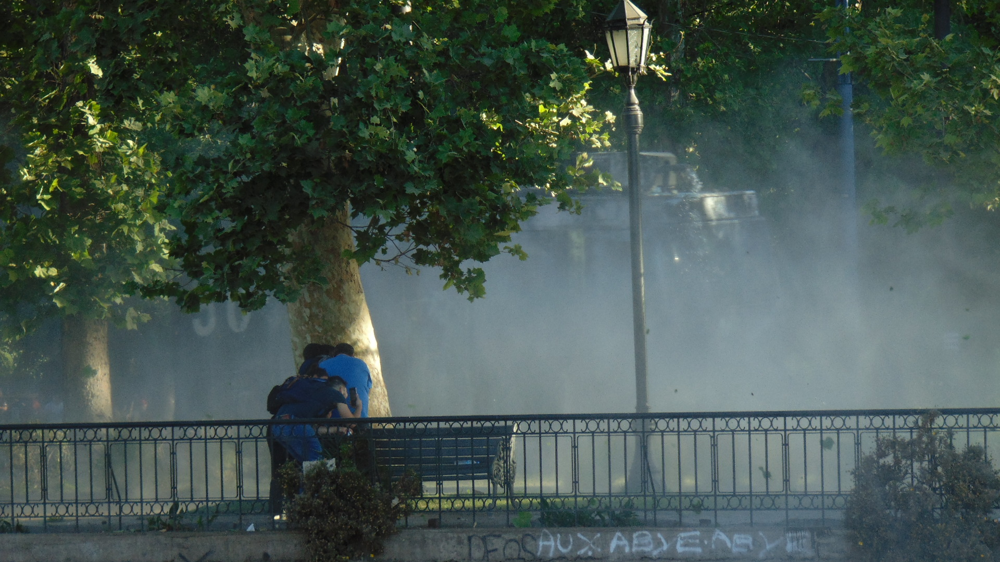

!DOCTYPE html>
<html lang="eS">
<head>
    <link type="text/css" rel="stylesheet" href="css/estilos.css">
    <meta charset="UTF-8">
    <meta http-equiv="X-UA-Compatible" content="IE=edge">
    <meta name="viewport" content="width=device-width, initial-scale=1.0">
    <title>Caos News</title>
    <link rel="stylesheet" href="https://maxcdn.bootstrapcdn.com/bootstrap/4.5.2/css/bootstrap.min.css">
  <script src="https://ajax.googleapis.com/ajax/libs/jquery/3.5.1/jquery.min.js"></script>
  <script src="https://cdnjs.cloudflare.com/ajax/libs/popper.js/1.16.0/umd/popper.min.js"></script>
  <script src="https://maxcdn.bootstrapcdn.com/bootstrap/4.5.2/js/bootstrap.min.js"></script>

 

</head>
<body style="background-color:white;"></body>
    
    <nav class="navbar navbar-expand-xl bg-light">
      <a class="navbar-brand" href="#">
        
      </a>
            <ul class="navbar-nav">
                <li class="nav-item">
                    <a class="nav-link" href="#" style="color: rgb(3, 3, 3);">Coronavirus</a>
                </li>
                <li class="nav-item">
                    <a class="nav-link" href="#" style="color: rgb(24, 24, 23);">Internacional</a>
                </li>
                <li class="nav-item">
                    <a class="nav-link" href="#" style="color: rgb(0, 0, 0);">Reportajes</a>
                </li>
                <li class="nav-item">
                    <a class="nav-link" href="#" style="color: rgb(24, 24, 23);">Deportes</a>
                </li>
                <li class="nav-item">
                    <a class="nav-link" href="#" style="color: rgb(0, 0, 0);">Politica</a>
                </li>
                <li class="nav-item">
                    <a class="nav-link" href="#" style="color: rgb(24, 24, 23);">Negocios</a>
                </li>
                <li class="nav-item">
                    <a class="nav-link" href="#" style="color: rgb(0, 0, 0);">Tendencias</a>
                </li>
            </ul>
            <form class="form-inline" action="/action_page.php">
              <input class="form-control mr-sm-2" type="text" placeholder="🔍">
              <button class="btn btn-danger" type="submit">Buscar</button>
            </form>
            <ul class="navbar-nav ml-auto">
              <li class="nav-item">
                <a class="nav-link" href="#" style="color:rgb(255, 255, 255)"><button class="btn btn-danger" type="submit">Iniciar Sesion</button></a>
              </li>
            </ul>
    </nav>
    <h1>Estallido Social</h1>

    <a>
     <h2>Categoria:</h2> Contigencia
     <br>
     <h2>Titulo:</h2> Teoria de complot en el estallido social
     <br>
     <h2>Historia:</h2> El divorcio entre las élites y los problemas de las personas es un factor común en la ola de protestas que sacude Latinoamérica en los últimos años, 
     dicen los autores. Argumentan que también fue similar la forma en que reaccionaron los distintos gobiernos: 
     descartando la validez del malestar social y atribuyéndolo a acciones instigadas por motivos ideológicos o criminales. 
     Esta columna analiza el caso chileno y particularmente la narrativa que desplegó el gobierno de Sebastián Piñera para explicar el estallido social. 
     Desde la “teoría de la agitación” a la “teoría del lumpen”, 
     el Presidente buscó “no solo deslegitimar las demandas sociales sino también propagar un discurso que justificara la represión contra la disidencia.”
     
     <h2>Autor:</h2> Emilio Sutherland
     <br>
     <h2>fecha:</h2> 30/10/2019
     <br>
     <h2>Ubicacion:</h2> Chile 
     <br>
     
        
    </a>
         
          


  
</body>
</html>